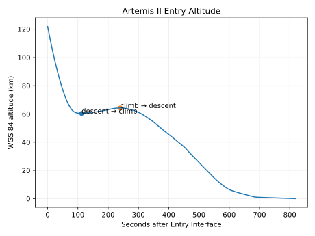
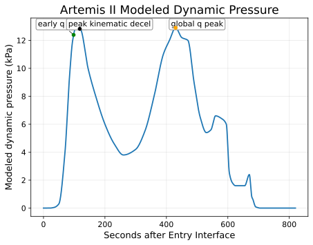
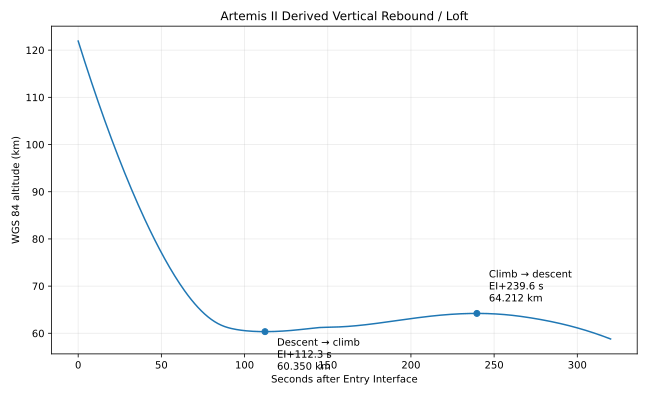
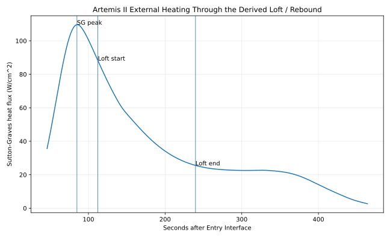
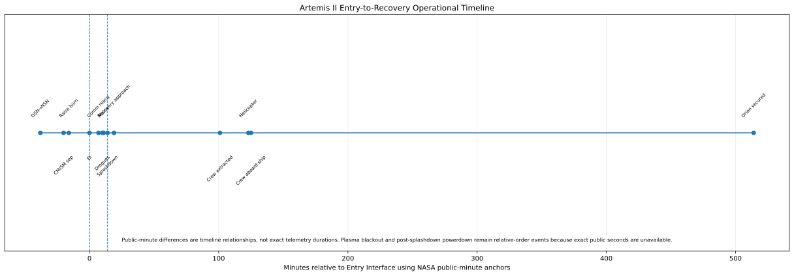

3D position separation between the reference and corrected two-body states.
Artemis II mission explorer
Follow Orion from Earth to the Moon and home.
Move through the mission, inspect the geometry, experiment with trajectory corrections, explore atmospheric entry, and connect the flight path to the environment around Orion.
Mission explorer
Scrub through Artemis II.
Move the mission clock. Watch Orion move from Earth to the Moon and home while the operational story changes around it.
MISSION ELAPSED TIME00:00:00:00
PHASELaunch
COMMNear-Earth network
Orion begins the first crewed Artemis lunar flyby mission.
Show me the engineering behind the mission maptrajectory products · SPICE geometry · uncertainty
This is a reconstruction, not a telemetry feed.
The visual uses the validated MissionLab event timeline and derived lunar geometry to teach mission progression. The underlying project parses public Orion Orbit Ephemeris Message products, uses SPICE for Earth/Moon/Sun geometry, refines closest approach, and correlates public events without claiming access to Orion's private onboard navigation state.
Open the flight-dynamics deep dive →
Trajectory correction · flight dynamics
Small Δv now. Different Earth arrival later.
A correction does not teleport Orion onto a new line. It changes the state vector. Gravity then carries that slightly different state forward, turning a tiny velocity change into a different future position, arrival time, orbital plane, or modeled vacuum periapsis.
01ESTIMATE STATE→
02CHOOSE ΔV VECTOR→
03EXECUTE BURN→
04COAST UNDER GRAVITY→
05REASSESS FUTURE GEOMETRY
NASA REPORTED · MISSION RECORD
Six opportunities. Two outbound burns were correctly cancelled.
The public record separates plan from execution. OTC1 and OTC2 were cancelled because Orion was already on track. OTC3 executed, but the MissionLab source set does not establish its flown Δv magnitude. RTC1–3 have NASA-reported durations and velocity-change magnitudes.
EARTH-RADIUS SCALE IS PHYSICAL · ARRIVAL INSET IS MAGNIFIED
Change in the corrected osculating orbit's vacuum periapsis altitude. This is not an atmospheric entry target.
Change in two-body time to vacuum periapsis relative to the reference orbit.
Downstream separation resolved in the reference radial, along-track, and cross-track axes.
Δv × time is useful intuition, but gravity continuously rotates and reshapes the response. Mission design propagates the state; it does not stop at the linear sketch.
The same burn matters differently depending on when you make it.
An earlier impulse has more time to change the future state. Burn placement is therefore part of the guidance, navigation, crew-schedule, tracking, thermal, communications, and propulsion trade space—not merely a convenient clock time.
Magnitude alone does not define a correction.
Along-track, radial, and out-of-plane impulses produce different downstream effects. Public reporting of a scalar velocity change does not disclose the complete flown targeting vector.
Sometimes the best correction is no correction.
OTC1 and OTC2 were cancelled because Orion remained on the desired path. A planned opportunity is not evidence that a burn must occur; navigation quality can make propellant expenditure unnecessary.
Go deeper: propagation model, equations, assumptions and evidencetwo-body gravity · impulsive Δv · RTN frame · public record ≠ targeting solution
MODEL CORE
Propagate the state, not a decorative curve.
MissionLab applies an instantaneous velocity increment to an educational Earth-return reference orbit, then numerically integrates both the uncorrected and corrected states under central Earth gravity:
r̈ = − μE r / |r|³
The impulse is assembled in the local radial-transverse-normal basis:
Δv = ΔvR R̂ + ΔvT T̂ + ΔvN N̂
The reference orbit is an educational ellipse sized between the public 121.9 km Entry Interface altitude and MissionLab's derived maximum Earth-center distance. It is not a fit to Orion's private navigation solution and it deliberately omits lunar/solar gravity, Earth oblateness, finite-burn dynamics, navigation covariance, maneuver execution error, atmosphere, lift, and real targeting constraints.
WHY BURN PLACEMENT IS HARDER IN FLIGHT
NASA's published Artemis II design work treats correction placement as an integrated GN&C problem.
Public NASA technical papers describe trajectory-correction placement in terms of entry-interface requirements, navigation uncertainty, maneuver execution errors, disturbances, ground-tracking geometry, crew schedule, thermal and communications constraints, venting, and propulsion configuration. MissionLab uses that public engineering context to explain the trade space without recreating NASA's flight targeting system.
NASA REPORTEDOTC cancellation/execution status, RTC timing, duration and reported scalar Δv magnitudes
MISSIONLAB DERIVEDBurn-to-EI time intervals from public event anchors where precision permits
MODELEDRTN direction, reference orbit, two-body propagation, separation, periapsis and timing response
UNKNOWN / NOT PUBLICComplete flown targeting vectors, covariance, private state estimate, targeting solution and detailed thruster history
Entry · descent · recovery
Watch lunar-return energy disappear.
Follow the flight-derived entry reconstruction continuously, then hand off to NASA-reported parachute, splashdown, and recovery milestones. The scrubber is a reconstruction visualization, not a telemetry replay.
RECONSTRUCTED ENTRY PROFILE23:53:30.866 UTCanalysis +0.0 s
HIGH-RATE SOURCE819 flight-derived statesM50 → validated analysis transform → WGS 84 geometry · browser view interpolates curated Phase 2 checkpoints
ARTEMIS II LOFT / REBOUNDThe brief climb in the reconstructed profile is real geometry. It is not a skip entry and does not reveal private guidance commands.
SCRUB THE RECONSTRUCTED ENTRYAnalysis elapsed time is referenced to the first high-rate state at 23:53:30.866 UTC, not an asserted private Entry Interface telemetry second. Browser state interpolates curated Phase 2 checkpoints for continuity rather than replaying all 819 source states.
Two clocks are intentionally visible. Analysis checkpoints can have sub-second precision because they are derived from the high-rate source. NASA live-update events such as reacquisition, drogues, mains, and splashdown remain public-minute anchors and are not promoted to exact telemetry epochs.
THE RELATIONSHIP THAT MATTERS
Nearly equal dynamic-pressure peaks. More than an order of magnitude difference in modeled heating.
EARLY LOAD PEAK · ANALYSIS +95 s12.798779 kPaModeled heat flux · 104.975953 W/cm²
vs
LATE / GLOBAL LOAD PEAK · ANALYSIS +431 s12.808389 kPaModeled heat flux · 7.596440 W/cm²
The modeled pressure peaks differ by only about 0.075%, but heating is dramatically lower at the later peak because velocity has fallen. Dynamic pressure scales with ρV² while Sutton–Graves heating scales approximately with √ρV³.
LOFT / REBOUND
The capsule briefly climbs while it keeps losing speed.
From analysis +112.294 s to +239.647 s, altitude recovers 3.861680 km while Earth-relative speed falls 2.514577 km/s. About 37.978839% of the stronger-continuum modeled convective heat load accumulates during this interval.
MISSIONLAB DERIVED + MODELED · ARTEMIS II LOFT / REBOUND ≠ ARTEMIS I SKIP ENTRYBLACKOUT
Expected radio silence is not an anomaly.
NASA reported a planned plasma communications blackout shortly after Entry Interface, expected to last about six minutes. MissionLab keeps the exact start/end seconds unknown because the public evidence does.
NASA REPORTED · PLASMA EVENT ≠ MEASURED PLASMA DENSITYPARACHUTE SYSTEM
Eleven parachutes, staged for different jobs.
System architecture: three forward-bay-cover parachutes, two drogues, three pilots, and three mains. NASA reported the as-flown drogue and main deployment minutes; the architecture is not an individual-canopy performance log.
NASA REPORTED SYSTEM ARCHITECTURERecovery is part of EDL
Splashdown is not the end of the engineering timeline.
NASA’s public minute sequence separates crew recovery from spacecraft recovery. MissionLab preserves that distinction instead of ending the story at water impact.
DERIVED SURFACE CROSSING00:07:08.824 UTC · 32.340599°, −117.763095°
This flight-derived WGS 84 surface crossing falls inside NASA’s reported 00:07 UTC splashdown minute. The 8.824 s offset is a consistency diagnostic, not an exact timing error, and the coordinate is neither an official NASA actual splashdown coordinate nor an official target coordinate. Official target-to-actual miss distance is not publicly quantifiable.
Show the engineeringtrajectory · atmosphere · Mach · heating · loft · recovery · evidence boundaries






q̇ = k √(ρ / Rₙ) V³
MissionLab’s low-fidelity Sutton–Graves implementation uses modeled NRLMSIS 2.0 density, Earth-relative reconstructed speed, and a 6.035 m Orion EFT-1 heritage/reference nose radius. Primary public interpretation is limited to Kn < 0.01 and Mach ≥ 5. The primary integrated modeled convective heat load is 162.686370921 MJ/m²; the stronger-continuum sensitivity is 159.150073328 MJ/m².
Permanent boundary: modeled heating ≠ measured TPS heat flux, measured temperature, ablation/recession, material damage, or crew thermal exposure. Kinematic deceleration / g₀-equivalent ≠ crew sensed g-load.
Space weather operations
What happens when the Sun becomes part of the flight plan?
Follow the engineering chain from a solar event to a measured particle environment, then to physical consequences and mission decisions. Actual Artemis II context stays separate from scenario modeling.
MISSION WEATHER BOARD + SEP RESPONSE LAB
Measure something real. Keep dose unknown until the evidence supports it.
The primary control is integral proton flux at energies ≥10 MeV, expressed in pfu. NOAA uses this measurement for its public Solar Radiation Storm S-scale. MissionLab uses that scale as an educational reference, not as an Artemis II flight rule.
EVIDENCE BOUNDARYProton flux is an external-environment measurement. It is not absorbed dose, effective dose, a personal dosimeter reading, or a substitute for Orion-specific shielding and transport analysis.
SEE IT · Sun → energetic particles → spacecraft contextQualitative geometry only · no particle transport or dose calculation
pfu = particles / (cm² · s · sr). NOAA S1 begins at 10 pfu, then each higher S level begins one decade higher through S5 at 100,000 pfu.
Beyond persistent low-Earth-orbit geomagnetic protection · crewed missions require dedicated radiation monitoring and response capability.
PUBLIC REFERENCE CLASSIFICATIONBelow NOAA S1 reference threshold
Crew-radiation interpretationNo NOAA solar-radiation-storm threshold crossed in this scenario.Interpretation of the external environment only. Actual crew exposure requires real dosimetry and vehicle-specific context.
Electronics interpretationEnergetic-proton environment remains below the NOAA S1 reference threshold.NAIRAS can produce flux/fluence quantities used for single-event-effect assessment, but this slider is not a component upset prediction.
Mission reasoning postureMONITOR MEASUREMENTS + TRENDPublic educational posture, not a NASA flight rule or internal action limit.
CREW DOSEUNKNOWN FROM THIS CONTROL · proton flux is not absorbed dose or crew effective dose
WHAT WOULD OPERATORS CARE ABOUT?MONITOR MEASUREMENTS + TREND
A quiet reference state is not zero radiation. Flight teams still care about background GCR, instrument health, trends, and forecast uncertainty.
1 · PHENOMENONSolar eruption / energetic-particle event
Solar eruptions can accelerate charged particles. Arrival and intensity evolve with magnetic connectivity and transport.
→2 · MEASUREMENTEnergetic proton flux + onboard radiation sensors
Public reference: ≥10 MeV proton flux in pfu. Orion also carries HERA sensors and crew-worn active dosimeters.
→3 · PHYSICAL CONSEQUENCEIonization, energy deposition, electronics effects
Charged particles interact with materials and electronics. Flux, energy spectrum, shielding, geometry, and transport all matter.
→4 · MISSION / CREW IMPLICATIONAwareness → assessment → protective decision
Teams integrate environment data with real spacecraft measurements, crew exposure, mission phase, system status, and approved operational criteria.
→Artemis II mission-window context · NASA OMNI near Earth
MissionLab Phase 5A aligned 13,053 one-minute OMNI rows to the mission clock. These are measured/compiled near-Earth solar-wind, IMF, and geomagnetic context—not Orion-local radiation measurements.
MAX SOLAR-WIND SPEED789.7 km/s2026-04-03 15:52 UTC · MET 01:17:16:48
MIN BZ GSM−14.46 nT2026-04-02 07:09 UTC · MET 00:08:33:48
MAX FLOW PRESSURE11.75 nPa2026-04-10 07:16 UTC · MET 08:08:40:48
MIN SYM/H−104 nT2026-04-02 08:41 UTC · MET 00:10:05:48
MISSIONLAB DERIVED FROM NASA OMNI. OMNI is time-shifted to the nose of Earth’s bow shock. MissionLab does not treat these extrema as proof of an Orion-local radiation event, spacecraft anomaly, or crew dose.
CURRENT CCMC DOCUMENTATIONNAIRAS Version 4 · production changelog includes 4.15
Current NASA CCMC documentation describes GCR, trapped-proton where applicable, and SEP radiation transport for aircraft/spacecraft, with dosimetric and electronics-oriented flux/fluence outputs.
HISTORICAL MISSIONLAB PHASE 5BNAIRAS 3.0 interface prepared · no run claimed
MissionLab previously prepared 3,262 public-trajectory rows for the NAIRAS 3.0 interface. No run ID, run output, shielding depth, or NAIRAS-derived Artemis II dose was produced.
NAIRAS, Orion monitoring, and the evidence boundary
NAIRAS is a physics-based radiation environment model hosted by NASA CCMC. Current public documentation is Version 4; MissionLab’s older Phase 5B artifact is explicitly retained as a Version 3.0 interface preparation, not silently migrated or relabeled. Artemis II carried six HERA active radiation sensors inside Orion and crew-worn active dosimeters. Those systems make radiation operationally real, but this public MissionLab experience does not claim access to private/as-flown crew dosimetry or internal NASA action thresholds.
Open radiation & space-weather analysis →